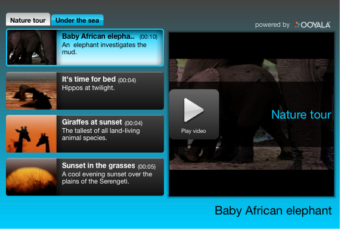

You can create and manage channel sets.
A channel set is a collection of channels.
All channels within the channel set are available through the tabs in the left pane of the channel window. When a channel is selected, all videos within that channel appear in the left pane. A preview image of the selected video appears in the right pane. 